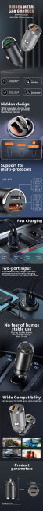

About this item
♥DUAL CHIPS INTELLIGENT POWER SUPPLY♥: Built-in PD30W & QC30W dual-core intelligent identification chip, the two cores output 30W fast charging current respectively, a safe, high-speed, non-damaging device fast car charger. Note: Support two devices charging at the same time, but not support super fast charging at the same time.
♥THUMB-SIZED, PULL RING DESIGN♥: The smallest perfect car charger on the market to date. The small body fits comfortably, flush with the lighter socket, does not stick out and hides perfectly in the lighter. Do not pop out while driving and will not block the lighter cover. Therefore, we designed a pull ring that will help you unplug it from your car lighter more easily.
♥ALL ZINC ALLOY METAL PROTECTION♥: Compared to the usual plastic, the all-metal carefully crafted body delivers a very smooth and sturdy feel. Metal material provides better heat dissipation, scratch resistance, and beautiful design.
♥WIDE COMPATIBILITY♥: The USB C cigarette lighter adapter quick charger is compatible with almost all popular car models and all Android/iOS and other devices such as iPad/iPhone (30W), Samsung phones/tablets (30W), Fire HD, etc. It can also be used with wireless car charger bracket and other car accessories.
Note
There are two different types of car chargers in this link, one is 100W and the other is 30W. Please be careful to distinguish and do not buy the wrong one
